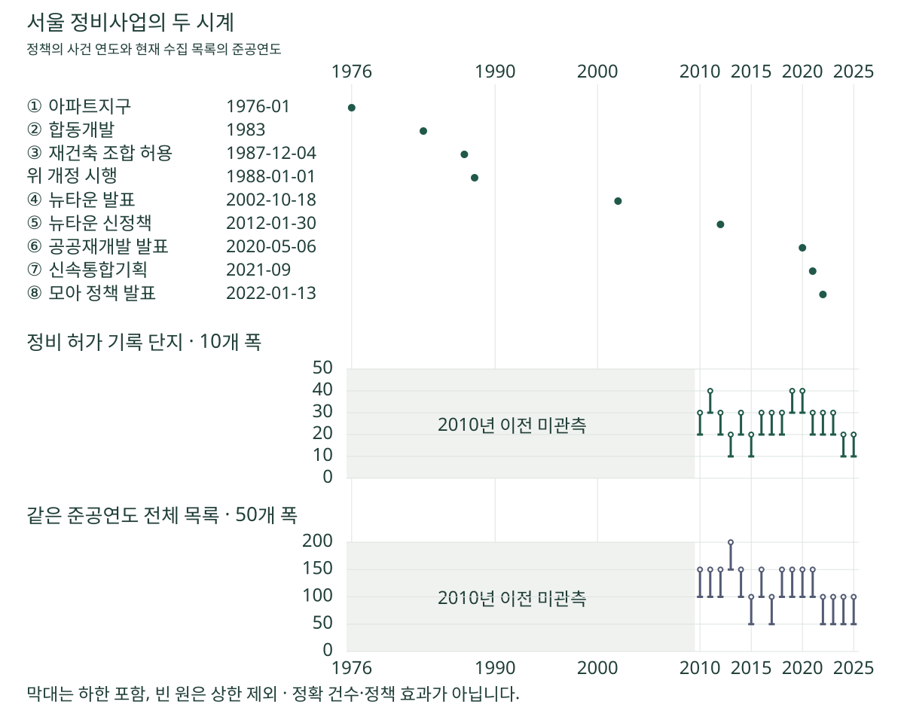

정비사업 숫자 읽기 · 정책사와 준공의 두 시계
서울 정비사업 50년, 정책 발표와 아파트 준공은 같은 시계일까?
아파트지구·합동개발·뉴타운·공공재개발·신속통합기획·모아타운의 공식 연표와 서울 2010~2025년 준공 기록을 비교합니다. 정책 발표와 준공 실적의 다른 시계를 확인하세요.
분석 기간 · 정책 사건 1976~2025년 · 현재 목록의 준공연도 2010~2025년 | 자료 기준일 · 공식 원문 확인 2026-10-20
뉴타운, 공공재개발, 신속통합기획, 모아타운은 모두 새 집과 관련된 이름이지만 같은 제도는 아닙니다. 발표된 해에 아파트가 곧바로 준공되는 것도 아닙니다. 1976~2025년의 주요 정책 사건과 현재 수집 목록에 남은 2010~2025년 준공 기록을 같은 연도축에 놓고, 두 시계에서 무엇을 읽을 수 있는지 살펴봅니다.
아파트지구부터 모아타운까지, 서로 다른 층위의 이름입니다
아파트지구는 도시계획의 지구 제도, 합동개발은 토지·건물 소유자와 건설업체가 참여하는 사업 방식의 역사입니다. 뉴타운은 여러 지역을 대상으로 한 계획과 정책의 이름이고, 공공재개발은 공공의 참여를 포함한 정비 추진 방안입니다. 신속통합기획은 정비계획 수립을 돕는 공공의 계획 지원이며, 모아주택과 모아타운은 개별 주택 정비와 지역 단위 계획의 구분이 필요합니다.
따라서 이 이름들을 서로 배타적인 사업 종류로 나눠 합계를 내면 곤란합니다. 같은 지역의 역사에 여러 정책이 겹칠 수 있고, 계획의 이름과 실제 법정 사업 유형도 다를 수 있습니다. 법적 유형을 확인하는 기준은 재건축과 재개발의 차이에서, 모아타운과 개별 사업의 단위는 소규모 정비사업 이름 구분에서 이어서 읽을 수 있습니다.
같은 연도축에 놓으면 무엇이 보일까요?
그림의 정책 표식은 사건이 속한 연도를 나타냅니다. 정확한 월·일이 확인된 경우는 다음 연표에 따로 적었습니다. 숫자 구간은 서울의 현재 수집 목록에서 해당 준공연도를 가진 단지의 수입니다. 재건축·재개발 허가 기재 합과 같은 준공연도 전체 목록을 서로 다른 눈금으로 보여줍니다.

회색 영역은 정비사업이 없었던 시기가 아니라 이 집계로 관측하지 않은 시기입니다. 2010년 이후 기록만으로 1970~2000년대의 공급 규모를 채울 수 없습니다. 2026년은 아직 끝나지 않아 준공연도 비교에서 제외했습니다.
발표일·개정일·시행일을 구분한 주요 연표
| 그림 번호·시점 | 확인한 사건 | 읽을 때 구분할 점·출처 |
|---|---|---|
| ① 1976년 1월 | 아파트지구제도 도입 | 도시계획 지구 제도의 도입 시점입니다. 최초 재건축 아파트의 준공일이라는 뜻이 아닙니다. 서울기록원 |
| ② 1983년 | 합동개발방식 도입 | 토지·건물 소유자와 건설업체가 참여한 방식의 변화입니다. 서울기록원 |
| ③ 1987년 12월 4일 개정 / 1988년 1월 1일 시행 | 노후·불량주택 철거와 새 주택 건설을 위한 조합 허용 | 주택건설촉진법 법률 제3998호의 개정과 시행을 구분했습니다. 최초 사업의 시작을 입증하는 자료는 아닙니다. 법률 개정이유·부칙 |
| ④ 2002년 10월 18일 | 뉴타운 시범계획 발표 | 당시 계획의 발표일입니다. 그해 사업 완료를 뜻하지 않습니다. 서울시의 2004년 회고 기사 |
| ⑤ 2012년 1월 30일 | 뉴타운·정비사업 신정책구상 발표 | 주민 의견을 확인해 사업의 진로를 결정하고 추진을 원하는 구역도 지원하는 구상이었습니다. 서울시 발표 |
| ⑥ 2020년 5월 6일 | 공공재개발을 포함한 공급 방안 발표 | 공공의 참여를 제시한 정책 발표입니다. 선정이나 준공 시기와 같지 않습니다. 국토교통부 발표 |
| ⑦ 2021년 9월 | 개정 기본계획에 근거한 신속통합기획 | 정비계획 수립 단계의 공공 계획 지원입니다. 별도의 법정 재개발·재건축 유형으로 더하지 않습니다. 서울시 정비사업 정보몽땅 |
| ⑧ 2022년 1월 13일 | 모아주택·모아타운 발표 | 발표 사건은 1월 13일, 안내 기사 발행일은 1월 14일입니다. 서울시 안내 |
‘뉴타운 출구전략’으로 불리는 2012년 정책을 모든 정비사업의 일괄 중단으로 요약하지 않았습니다. 주민 의견에 따른 선택과 추진 희망 구역의 지원을 함께 읽어야 합니다. 공공재개발의 발표 역시 2021년 이후의 사업 선정 등과 구분해 2020년 사건으로 표시했습니다.
이 글에서 ‘서울의 최초 재건축’은 확인하지 못했습니다. 아파트지구 도입이나 조합 관련 법 개정이 확인됐다는 사실로 그 빈칸을 대신 채우지 않습니다. 같은 이유로 정책 발표 때 제시된 미래 목표를 이후의 준공 실적으로 쓰지 않았습니다.
준공 기록의 파고는 어떻게 보이나요?
앞 그림의 막대와 아래 펼치는 표의 한 단위는 현재 목록의 정규 단지 한 곳입니다. 신고 식별자 수, 건물 동 수, 사업구역 수, 공급세대 수와 다릅니다. 재건축·재개발 허가명이 확인된 두 집합을 합쳤고, 연도별 유형 수를 따로 나누지 않았습니다.
2010~2025년 준공연도별 단지 수 구간 표 펼치기
| 준공연도 | 재건축·재개발 허가 기재 합 | 같은 준공연도 전체 목록 |
|---|---|---|
| 2010 | 20개 이상 30개 미만 | 100개 이상 150개 미만 |
| 2011 | 30개 이상 40개 미만 | 100개 이상 150개 미만 |
| 2012 | 20개 이상 30개 미만 | 100개 이상 150개 미만 |
| 2013 | 10개 이상 20개 미만 | 150개 이상 200개 미만 |
| 2014 | 20개 이상 30개 미만 | 100개 이상 150개 미만 |
| 2015 | 10개 이상 20개 미만 | 50개 이상 100개 미만 |
| 2016 | 20개 이상 30개 미만 | 100개 이상 150개 미만 |
| 2017 | 20개 이상 30개 미만 | 50개 이상 100개 미만 |
| 2018 | 20개 이상 30개 미만 | 100개 이상 150개 미만 |
| 2019 | 30개 이상 40개 미만 | 100개 이상 150개 미만 |
| 2020 | 30개 이상 40개 미만 | 100개 이상 150개 미만 |
| 2021 | 20개 이상 30개 미만 | 100개 이상 150개 미만 |
| 2022 | 20개 이상 30개 미만 | 50개 이상 100개 미만 |
| 2023 | 20개 이상 30개 미만 | 50개 이상 100개 미만 |
| 2024 | 10개 이상 20개 미만 | 50개 이상 100개 미만 |
| 2025 | 10개 이상 20개 미만 | 50개 이상 100개 미만 |
2011·2019·2020년의 정비 허가 기록은 30개 이상 40개 미만 구간입니다. 2013·2015·2024·2025년은 10개 이상 20개 미만 구간입니다. 이 정도의 차이는 읽을 수 있지만, 같은 구간 안에서 어느 해가 더 많았는지나 정확한 최고점을 말할 수는 없습니다.
전체 목록도 같은 크기가 아닙니다. 예를 들어 2013년 준공 목록은 150개 이상 200개 미만, 2025년은 50개 이상 100개 미만입니다. 이 두 분모가 다른데 정비 기록의 막대만 비교하면 수집 목록의 차이를 놓칩니다. 구간의 중간값을 분자·분모로 삼아 정비 비율을 계산하지 않았습니다.
‘전체 목록에서 정비 허가 기록을 뺀 나머지’도 모두 비정비사업이라고 부를 수 없습니다. 허가가 미기재되거나 여러 유형이 섞인 단지, 날짜와 연결 조건에 맞는 건물을 찾지 못한 단지, 다른 허가 구분으로 기록된 단지가 함께 남아 있기 때문입니다.
왜 정책의 성공·실패를 보여주는 그래프가 아닐까요?
현재 남은 목록을 과거의 전수 실적으로 바꿀 수 없습니다. 수집에서 빠진 단지와 이미 멸실된 단지, 허가 기재가 부족한 단지는 여기서 복원하지 못했습니다. 옛 주택을 허문 세대와 새로 지은 세대를 연결한 자료도 아니므로 순공급을 계산한 것이 아닙니다.
각 준공 단지와 특정 정책의 적용 이력을 연결하지 않았습니다. 발표 뒤에 준공 기록이 늘거나 줄어 보이더라도 이전에 시작한 사업, 사업의 규모, 금융·시장 여건 등과 구분한 효과가 아닙니다. 연표의 점에서 준공 막대로 화살표를 그어 어느 정책이 그 집을 만들었다고 설명하지 않습니다.
서로 다른 날짜를 하나의 기간으로 빼지 않았습니다. 도시 전체 정책의 발표일과 어떤 단지의 준공연도 차이는 그 사업의 소요기간이 아닙니다. 실제 공사 날짜의 비교는 착공부터 사용승인까지의 기간에서 별도의 대상·규모 조건으로 다룹니다.
관심 지역에서는 세 날짜를 확인하세요
한 사업의 단계가 궁금하다면 정비사업 절차와 날짜를 함께 확인하세요. 도시 전체 정책의 연표와 해당 구역의 절차는 구분해야 합니다.
- 정책의 사건일을 확인합니다. 과거 발표·법 개정·시행 중 어떤 날짜인지 적습니다. 기사 게시일과 사건일도 구분합니다.
- 해당 구역의 고시와 현재 단계를 확인합니다. 그 정책 이름이 실제로 해당 지역에 적용되는지 원문을 찾습니다. 선정됐다는 말만으로 사업시행인가나 착공으로 바꾸지 않습니다.
- 건물의 사용승인일과 입주 일정을 확인합니다. 승인연도는 계획 발표일과 다르고, 실제 입주 개시일과도 같은 날짜라고 가정하지 않습니다.
이 연표의 쓰임은 관심 사업의 수익률이나 예상 입주일을 산출하는 데 있지 않습니다. 비슷한 정책 이름과 서로 다른 사건 날짜를 분리해, 다음에 어떤 문서를 확인해야 하는지 찾는 데 있습니다. 현재 적용 요건과 개인의 권리는 해당 시점의 공식 고시·법령·사업 자료로 별도로 확인해야 합니다.
원천·집합·구간 표시 기준 펼치기
연혁은 위 표의 서울기록원·서울시·국토교통부·국가법령정보센터 원문을 2026년 10월 20일 확인했습니다. 1987년 법률 제3998호의 개정이유와 부칙을 특정해 읽었으며, 같은 페이지에 함께 있는 다른 연도의 내용을 혼합하지 않았습니다. 1976년 1월이나 1983년처럼 원천의 날짜 정밀도가 다른 경우 임의의 월·일을 보충하지 않았습니다.
준공 집계는 현재 아파트 목록과 국토교통부 건축HUB 건축물대장정보의 허가 구분·사용승인일을 사용했습니다. 대장은 한국 시각 2026년 10월 4일까지 수집한 자료입니다. 서울 본적, 준공연도 2010~2025년인 단지에서 비공유 주거 주건축물의 유효 승인연도가 목록의 준공연도와 정확히 일치해야 합니다. 같은 물리 건물을 여러 단지에 임의 배분하지 않았습니다.
남은 건물의 허가명이 한 유형으로 일관되고, 재건축 협의·시행인가 또는 재개발·도시환경 협의·시행인가가 기재된 단지를 합쳤습니다. 소규모 협의 기재도 포함되므로 일반 정비사업만의 법적 전수 명부가 아닙니다. 착공일 존재는 선택 조건으로 쓰지 않았습니다. 원형 자료에서 별도로 고른 분류·연도별 집계와 대조했습니다.
정비 허가 기록은 10개 폭, 전체 목록은 50개 폭의 구간으로 표시합니다. 정비 기록과 같은 해의 나머지가 각각 10단지 이상이고 전체가 30단지 이상인 조건을 사용했습니다. 이 기준은 대표성의 보증이 아닙니다. 정확한 단지 수·개별 식별자·유형별 작은 집합·세대수·거래 가격은 공개하지 않으며, 기존 공개 집계와의 관계도 별도로 검토했습니다.
공개 건수 구간(JSON)에는 16년의 두 구간과 해석 범위가 있습니다. 정책의 개별 사업 적용, 전체 역사적 준공 실적, 정책별 성과나 앞으로의 공급량은 포함하지 않습니다.
분석·집필: 파파펭귄 (Nobot Kang). 에이전트로 공식 원문 확인·원형 집계 대조·구간 검산·그림 생성과 초안 작성을 보조했습니다.